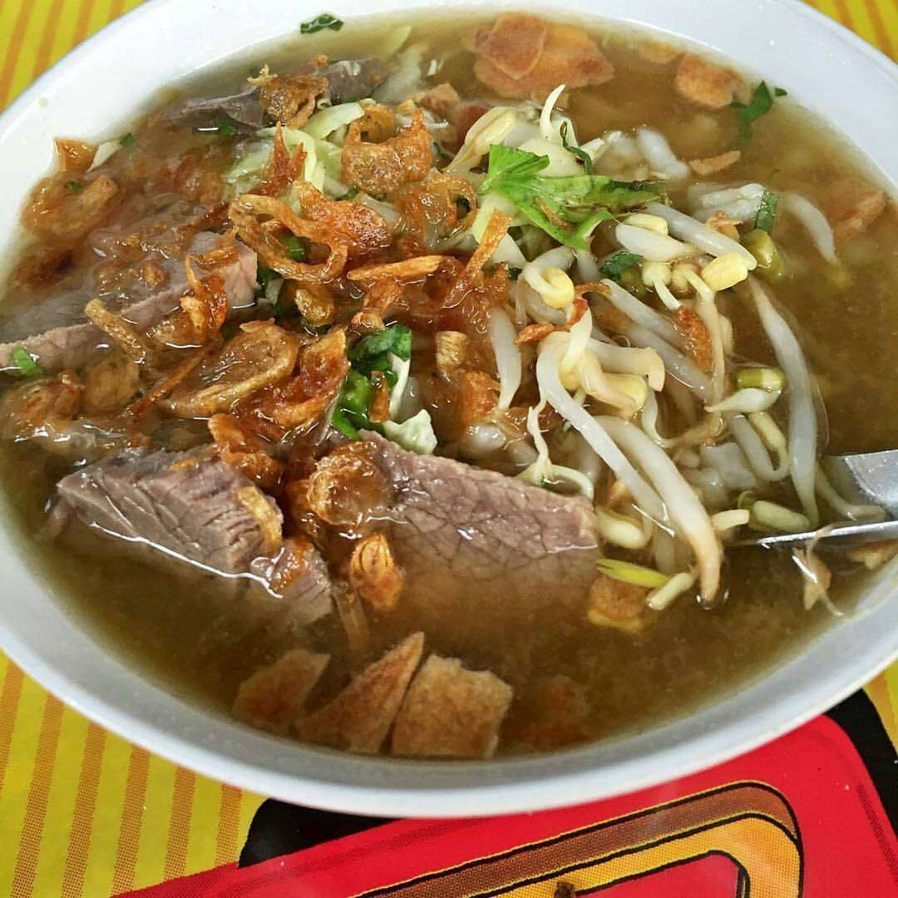
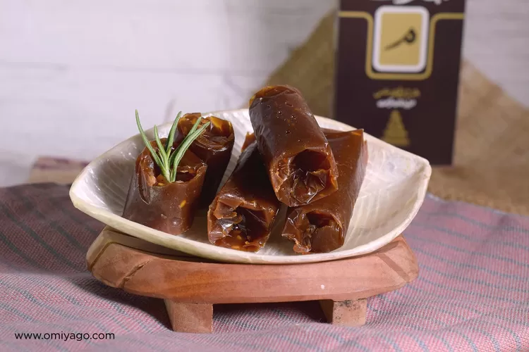
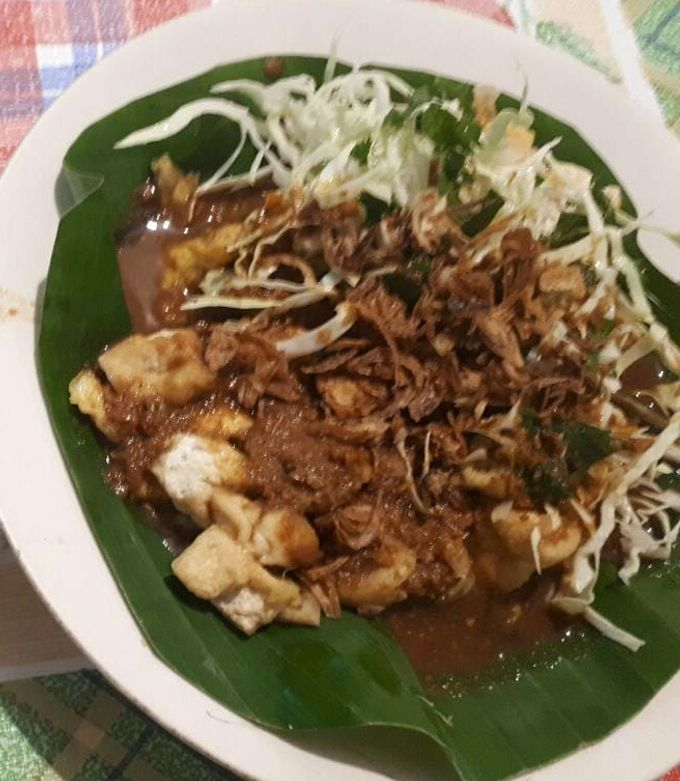

Makanan Di Kudus Enakk???!
Tenntunyaa sini aku kasih tahu
Soto Kerbau
Soto yang terbuat dari kerbau, karena budaya di Kudus menghormati umat Hindu

Jenang Kudus
Salah satu jajan manisan khas kudus yang bahan utamanya menggunakan gula merah

Nasi Tahu
Nah ini paling enak!!, Karena orang yang makan ini kebanyakan ngincar gimbalnya. Nasi tahu ini sama seperti Tahu tek di Surabaya, namun bedanya Nasi tahu tidak menggunakan Petis

Nah itu beberapa makanan khas yang ada di kota kudus:)